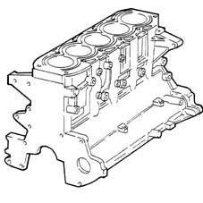

DESCRIPTION OF COMPONENTS
- Path
- Descriptions > 10 ENGINE > 1012 ENGINE CRANKCASE > 1012A CRANKASE AND COMPONENTS > DESCRIPTION OF COMPONENTS
- Kind
- system description
- Applies to
- engines: 2.4 JTD 20v; all production periods
- Interactive page
- https://sloeber94.github.io/elrnDB-fCrm/en/#/194003879
Applies to: engines: 2.4 JTD 20v; all production periods
ENGINE CRANKCASE
Specifications
Function
This is the main structural part of the engine.
Its purpose is to contain and support all the crankshaft components.
Type
The crankcase is in ductile cast iron with closed-deck integral cylinder liners.
The crankshaft is supported by six main bearings.
Special channels in the crankcase walls carry coolant and lubrication fluid.
